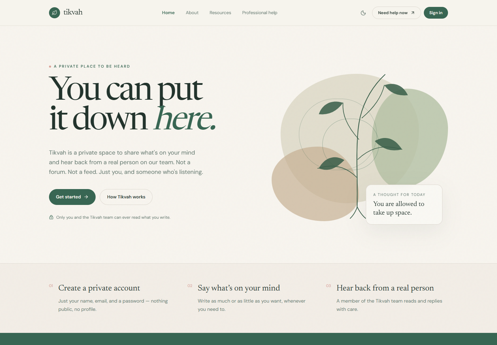
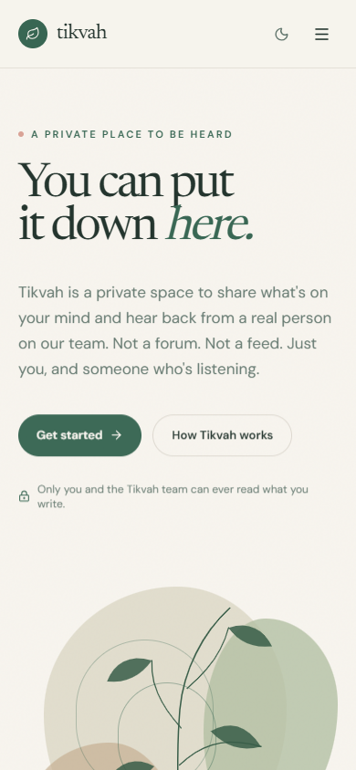

Software development / Nigeria
Make room
Make room
for better.
Websites, applications and systems built around the way your business works.
We’re AeolusLabs. Two developers helping African businesses turn practical needs into useful software. Tell us what you’re building
Selected client work · Tikvah


Tikvah
A place for
A place for
human connection.
A complete emotional-support platform, delivered from frontend to backend.
- 01Whole interface
- 02Explained detail
- 03Mobile experience
How we can help
Start with the need.
Start with the need.
Then choose the tools.
Customers and staff get one place for the work they do most often, with the details already in the right order.